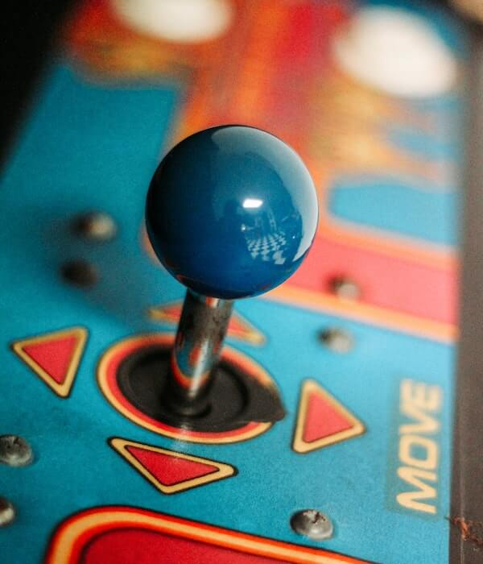

Passies variëren van de adembenemende afdalingen op de besneeuwde pistes van Oostenrijkse skigebieden tot de opwinding van virtuele werelden in gaming. Skiën, een betoverende samensmelting van natuur en avontuur, biedt een onvergetelijke ontsnapping aan de dagelijkse sleur, terwijl gaming, met zijn geavanceerde technologieën, verhalen en gemeenschappen, een wereldwijd fenomeen is geworden. Programmeren, de kunst van het coderen, opent de deur naar digitale innovatie en creativiteit, waardoor abstracte ideeën tastbare realiteit worden. Deze drie uiteenlopende interesses weerspiegelen de diversiteit van moderne passies, variërend van fysieke uitdagingen tot virtuele ontdekkingen, en demonstreren de unieke manieren waarop mensen zich verbinden met de wereld om hen heen.
| foto | tekst |
|---|---|
| skiiën | |
 |
Skiën, een sport doordrenkt met opwinding en avontuur, biedt een unieke manier om te ontsnappen aan de dagelijkse routine en te genieten van de pracht van besneeuwde berglandschappen. Met de wind die door je haren suist, daal je moeiteloos af over de perfect geprepareerde pistes, een gevoel van vrijheid omarmend terwijl de koude bergluch t je wangen streelt. Of je nu een beginner bent die voorzichtig zijn eerste bochten maakt of een ervaren skiër die de uitdaging zoekt van steile hellingen, skiën verbindt mensen met de natuur op een unieke en opwindende manier. In Warth komt de magie van wintersport samen met de schoonheid van een authentiek Oostenrijks bergdorp. Te midden van met sneeuw bedekte chalets en sfeervolle straten biedt dit skigebied meer dan alleen een indrukwekkend panorama. Of je nu een doorgewinterde skiër bent die de uitdagende afdalingen verkent of een gezin dat geniet van de brede beginnershellingen, Warth heeft voor elk wat wils. De betrouwbare sneeuwcondities gedurende het seizoen zorgen voor een consistente en hoogwaardige ski-ervaring. Naast de pistes kunnen bezoekers ontspannen in lokale berghutten en restaurants, genietend van heerlijke lokale gerechten en de gezellige après-ski sfeer. Warth belichaamt de perfecte combinatie van wintersportavontuur en traditionele Oostenrijkse gastvrijheid, waardoor het een onvergetelijke bestemming is voor elke skiër. |
| programmeren | |
 |
Programmeren, de kunst van het schrijven en structureren van code, is een krachtig gereedschap dat de digitale wereld vormgeeft. Het stelt individuen in staat om abstracte ideeën om te zetten in functionele software, waardoor innovatie en technologische vooruitgang worden aangedreven. Programmeren gaat verder dan enkel commando's schrijven; het is een creatief proces waarbij problemen worden opgelost, logica wordt toegepast en efficiënte algoritmes worden gecreëerd. of het nu gaat om het ontwikkelen van websites, mobiele apps, kunstmatige intelligentie of geavanceerde systemen, programmeren is de sleutel tot het ontsluiten van de potentie van moderne technologie en het vormgeven van de digitale toekomst. |
| gamen | |
|  | Gamen, een dynamische en boeiende vorm van entertainment, heeft zich ontwikkeld tot een wereldwijde cultuur die mensen van alle leeftijden en achtergronden aanspreekt. Met geavanceerde technologieën en creatieve storytelling biedt gamen niet alleen een ontsnapping aan de realiteit, maar ook een interactieve reis naar diverse werelden vol uitdagingen en avonturen. Of het nu gaat om het oplossen van complexe puzzels, het verkennen van epische virtuele landschappen of het deelnemen aan intense multiplayer-competities, gaming heeft de kracht om gemeenschappen te vormen en individuen te verbinden door gedeelde passies en virtuele ervaringen. |